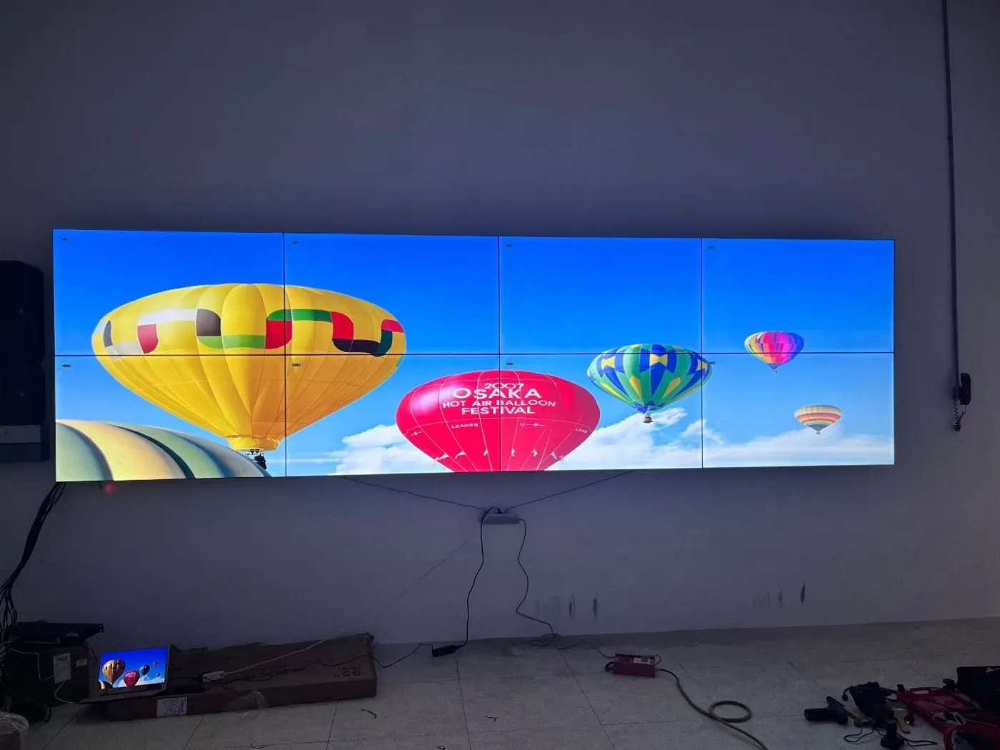
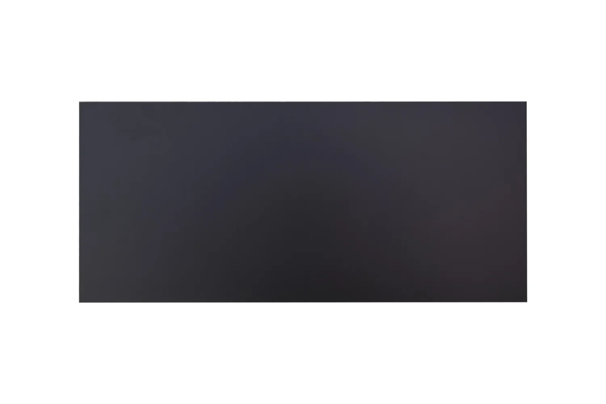

What does COB vs LCD mean for a command-and-control wall? It is the choice between a chip-on-board LED video wall, built as a continuous fine-pitch surface, and a tiled LCD video wall, built from individual panels with a bezel at every join. The buying decision in a control room, operations gallery or command centre is not which technology is “better” in the abstract. It is whether the operators will read maps, camera grids and text across a single surface at close range, for long sessions, and whether the room can live with seams, service access and a stated spare plan.
This guide is for AV integrators, consultants and facility owners comparing a COB LED control room wall with an LCD video wall for the same opening. It does not replace the general LED vs LCD digital signage comparison, which covers signage and meeting rooms more broadly, or the control-room operations guide. Packaging differences among COB, SMD and GOB are in the encapsulation guide. For a 24/7 duty cycle on a COB wall, use the 24/7 COB control-room guide. For fine-pitch selection in general, see the fine-pitch buying guide.
LCD video walls are familiar, widely serviced, and often the first option in a small operations room. They also introduce a grid of bezels, a practical limit on how large and how seamless a canvas can be, and a different spare model (a whole panel, not a module). Fine-pitch COB is usually raised when the brief asks for a single image, closer viewing, or a wall that must grow beyond a modest array without the grid becoming part of the picture.
If the RFQ only says “video wall” and a diagonal size, both answers can be bid, and they are not interchangeable. Name the technology, or name the requirements that will decide it: maximum acceptable seam, closest viewing distance, content type, daily duty, and how a failed element is replaced.
An LCD video wall is a matrix of monitors. Even a narrow-bezel array leaves a cross-line through maps, camera walls and scrolling text. Operators learn to look around those lines; they should not have to if the brief asked for a continuous surface. A COB LED wall is built from modules whose light-emitting surface is a packed chip-on-board face, so the image can run across cabinet joins without a frame in the picture, provided the wall is built, calibrated and maintained as one display.
That is the core of a COB vs LCD control room decision. It is not a claim that every LCD wall is unfit, or that every COB wall is automatically seamless. A poorly commissioned LED wall can show module edges, colour islands or a dirty black level. The specification should require a continuous surface, a viewing-distance target, and an acceptance test at the operators’ seats — not a technology slogan.
Figure 1 shows an LCD video wall made of eight panels. The image is clear, and so are the bezels that run through it. In a command-and-control room those lines fall across maps and camera grids unless the designer has planned content around them.

Command-and-control rooms often seat people closer than a lobby or a lecture hall. A fine-pitch COB surface is designed for that kind of distance; an LCD array can also work at close range, but the bezel grid becomes more obvious the nearer the viewer sits. Use the viewing-distance guide for the industry rule of thumb that relates pixel pitch to comfortable distance, and treat it as a starting point, not as a substitute for a seat test.
On published figures, RH-PRO COB lists brightness 800–1200 cd/m², contrast ≥25000:1 and a viewing angle of 178° H/V, with DCI-P3 ≥99%. Those figures describe that series. They are not a generic “COB always beats LCD on contrast” statement, and they are not LCD specifications — Asia Vision does not publish an LCD video-wall product page. A command-and-control room is usually run below peak brightness; what matters is whether the wall stays even and readable at the operating level the operators will actually use, including dark UI and fine text.
The two architectures fail and get repaired differently. An LCD wall is typically serviced as complete panels; a COB LED wall is typically serviced as modules and power or receiving hardware, from the front or the rear depending on the cabinet. A shallow architectural cavity may require front service. A room that can give rear access may prefer it. Neither preference is a technology verdict; it is a build constraint that should appear in the RFQ.
Spares should match the architecture. For COB, that usually means spare modules and power supplies from the same production batch, so a replacement does not show as a different colour or brightness island. For LCD, it means spare panels of the same type, with a plan for aging and brightness matching as the array ages. Do not assume that “a spare is included” means the same thing on both bids.
Figure 2 shows the front face of a COB LED module: a continuous dark surface rather than a framed monitor. That is the unit a technician swaps on a COB wall; it is not an LCD panel.

Asia Vision manufactures LED displays, not LCD video walls. The relevant published starting point for a premium command-and-control LED wall is RH-PRO COB: P0.78 / P0.93 / P1.25 / P1.56, flip-chip COB, module 300 × 168.75 mm, refresh ≥7680 Hz, brightness 800–1200 cd/m², contrast ≥25000:1, viewing angle 178° H/V, DCI-P3 ≥99%, and dual power, dual receiver and dual signal. The page places the series in luxury corporate headquarters, premium broadcast studios and government command centres.
That page does not publish a side-by-side LCD comparison, a bezel-width equivalent, a power-consumption figure against an LCD array, or a statement that COB must be used in every control room. COB CV-PRO is an indoor fine-pitch alternative (P0.9375 / P1.25 / P1.5625 / P1.875, 800 cd/m², ≥3840 Hz, ultra-thin, no backshell) but does not publish the same dual-path redundancy or a command-centre use. Product pages publish a 3-year warranty and 18-day standard factory dispatch; ISO 9001, CE, FCC and RoHS are company credentials. Any comparison table that quotes LCD panel sizes, bezel millimetres or LCD contrast must come from the LCD bidder, not from an Asia Vision product page.
A workable COB vs LCD control room RFQ states the visual and service requirements, and lets the technology follow:
Attach a seating plan, the cavity depth, the content types, and the daily duty. If a continuous, bezel-free image is a requirement, say so in those words. If an LCD array is acceptable provided bezels stay below a stated width, say that instead — and hold the LCD bidder to it. For long daily duty on a COB proposal, cross-refer the 24/7 guide rather than repeating a duty-cycle clause only as a slogan.
If you are comparing a command-and-control LED wall with an LCD array, start with RH-PRO COB for a premium fixed wall that needs the published redundancy and command-centre positioning. CV-PRO can be discussed for a close-view indoor wall where that redundancy is not required. Send the opening size, the closest viewing distance, whether a bezel-free surface is mandatory, and the daily duty. We will confirm the cabinet series and, on the quotation, any spare or interface items that can be offered. We will not invent LCD specifications, a universal contrast winner, or a duty rating that is not on the product page. Start the enquiry through the contact form or email info@asiavisionled.com.
Comparing a command-and-control COB wall with an LCD array? Send the opening size, the closest viewing distance, whether a bezel-free surface is required, and the daily duty, and we will reply with the cabinet data that can be confirmed. Start a project enquiry.